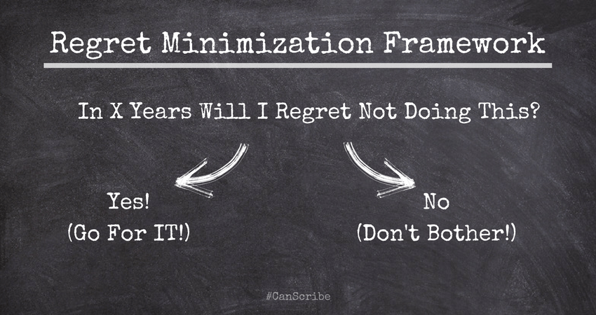

Regret Minimization
08 Sep 2021
There’s a well-known quote from a famous businessperson of our time that goes something like:
I wanted to project myself forward to age 80 and say, ‘OK, I’m looking back on my life. I want to minimize the number of regrets I have.’ And I knew that when I was 80, I was not going to regret having tried this. I was not going to regret trying to participate in this thing called the Internet that I thought was going to be a really big deal. I knew that if I failed, I wouldn’t regret that. But I knew the one thing I might regret is not ever having tried. I knew that that would haunt me every day.
Regret minimization is a framework for evaluating important life decisions. Personally, I have found it difficult to apply to my own life, and in this post, I make a case for why regret minimization is more complicated than it seems.
To start, what are some examples of important life decisions to which we might apply regret minimization? Such choice paralysis might just be an affliction of the young and overly ambitious, but here are some possibilites:
Should I emigrate to the U.S.?
Should I move across the country to do X?
Should I choose company Y or company Z? (Which job offer should I take?)
Should I get a graduate degree (e.g., a PhD, an MBA, etc.)?
Should I start a company?
According to regret minimization, we should project ourselves into the future and consider which path we would regret not taking more. Will I regret not moving for that job opportunity I once had? Will I always regret that I didn’t get a PhD?
Here are some challenges with regret minimization:
You don’t know what you will regret
Our values change. I might value adventure in my 20s, but value stability more in my 30s. So a choice that was good for 25-year-old me may not be as good for 35-year-old me. In this specific case, regret minimization based on my current values may bias me toward a more risk-seeking path.
The world can also change. Joining a startup doing X may have been a good idea in 20YZ, but if the funding climate for X dries up subsequently, then the startup might fail. The cost? Years of lost earnings and career progression at a more stable place.
There are also tradeoffs to make. For example, if I leave my hometown to pursue a great opportunity, I might regret leaving all my friends and family behind. But if I don’t go, I might always be haunted by the specter of what I could have achieved.
You can’t do everything
Regret minimization is a framework that biases toward doing things. (Most of our life regrets are regrets of omission, not commission.) Many experiences in life have limited downside, but high upside, so regret minimization says we should try all the things! Do all of X, Y, and Z! Get all of the graduate degrees! After all, we might regret not doing Y.
But doing things has a cost. Getting a PhD has a time cost and a financial cost. Job hopping also has a cost. Each experience we undertake changes us. And a long series of failed life experiments can be discouraging.
As emotional beings, we don’t have an unlimited emotional budget for trying new things.
Regret is conditioned on what happens
This one is tricky. If I have an exceptional career, one that surpasses my expectations, I am unlikely to have major career regrets.
But if my career is mediocre, I could have many regrets. Why didn’t I join company X? Why didn’t I get an MBA? Why didn’t I pivot to doing Y?
So what actually happens shapes our regrets in a substantial and unpredictable way.
Valuing our options is difficult
When deciding between options, we often do not have the information to accurate value them.
For example, we may undervalue a stable career path, believing that option will always be open to us. But that may not be the case: if you walk away from X now, you may not get the chance to do X again for a long time.
Regret is unhealthy
Regret is a subjective way of thinking about our lives. We can be down on ourselves for not achieving X, Y, and Z, or we can be proud of all the things we did manage to do.
Simulating alternate life paths is an unhealthy fantasy. The best time to stop thinking about life as a cost function to be optimized is now.
Regret is influenced by social norms
Here’s a weirdly specific example: if I attended Stanford, I might regret not trying to start a company (many of my peers tried, and some of them succeeded). If I went to any other university in the world, I might regret not staying in my great job.
Regret is negative
Instead of seeking to minimize our regrets, we can also think about the inverse objective: maximizing reward.
This again brings us to the idea that we should pursue low-downside, high-upside experiences, especially when we are young and can tolerate the costs of experimentation.
“Maximizing reward” rewires our brains to view things optimistically (the baseline is zero reward), rather than pessimistically (the baseline is zero regret).
Maximizing reward also means that instead of seeking to minimize our downside, or check off a list of to-dos (for fear we might regret not doing them), we commit wholeheartedly to things we know we love.
Regret minimization overvalues our future self
According to regret minimization, you should make decisions based on what your 80-year-old self would think. But that’s an awfully long time to wait. My 80-year self would love to see me cure cancer and own homes in Malibu and La Jolla. But my current self just wants to have a good time. Humans hyperbolically discount future rewards, which makes long-term thinking difficult for us.
It’s important to appropriately balance the present and the future. I don’t want to become homeless, but I also don’t want to go through a world of pain to appease my future self.
Given all of these issues, how should I actually make life decisions?

The same individual who gave us this flawed regret minimization framework luckily also gave us this gem:
It’s interesting, I do get asked quite frequently what’s going to change in the next 10 years. One thing I rarely get asked is probably even more important — and I encourage you to think about this — is the question: What’s not going to change in the next 10 years?
The answer to that question can allow you to organize your activities. You can work on those things with the confidence to know that all the energy you put into them today is still going to be paying you dividends 10 years from now.
It’s impossible to imagine people saying to me, “Jeff, I love Amazon. I just wish you delivered a little more slowly.” Or, “I love Amazon, I just wish your prices were a little higher.”
In business, customers’ desire for low prices, large selection, and fast delivery are the invariants that never change.
What are the invariants in your life? What values have you always held, that you forsee yourself always holding? What are your non-negotiables?
For me, one life invariant has been my desire to pursue excellence. I have been an overachiever since I was five years old, and that is something that is unlikely to change anytime soon. So this gives me a good test for thinking about important life decisions. What choices increase the likelihood (and secondarily, the magnitude) of achieving excellence for me?
Another set of invariants might be core interests. Since elementary school, I have enjoyed math, writing, and strategy games, so choices that put me closer to exercising my core interests on a regular basis get precedence over those that optimize for some temporary objective.
Finally, there are lifestyle invariants. One lifestyle attribute that I really value is freedom. Agency. The ability to walk away from something. This rules out career paths that involve e.g., long periods of indentured servitude.
Think about your invariants, and make your decisions accordingly.
Read More
- Job Search (06 May 2022)
- 2021 Books (01 Jan 2022)
- Machine Learning (31 Aug 2021)
- Required Reading (16 Jul 2021)
- Revolutions (14 Oct 2017)
- On Computer Science (15 Sep 2017)
- Samvit's Guide to the World Wide Web (28 Aug 2017)
- How to Pick Your Next Gig: Evaluating Startups - Part II (14 Aug 2017)
- How to Pick Your Next Gig: Evaluating Startups - Part I (14 Aug 2017)
- A Brief Primer: Stochastic Gradient Descent (20 Jul 2017)
- Why Parallelism? An Example from Deep Reinforcement Learning (06 Jul 2017)